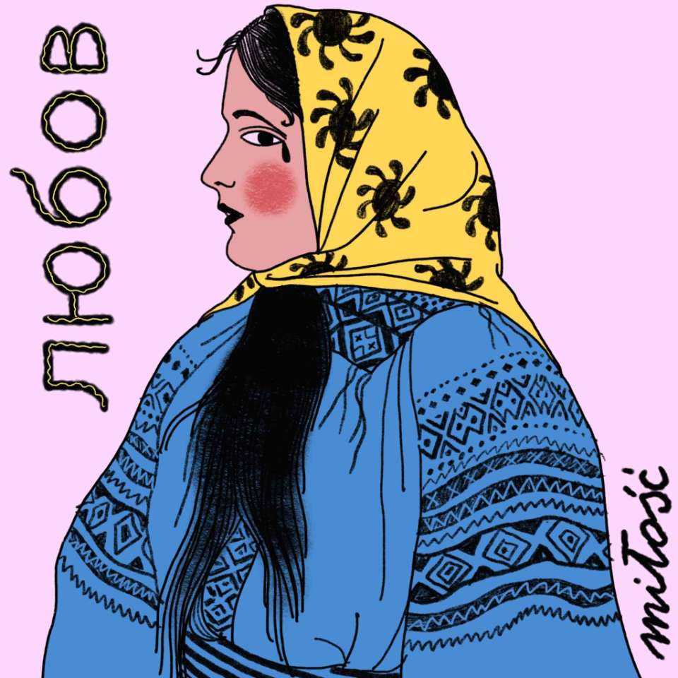
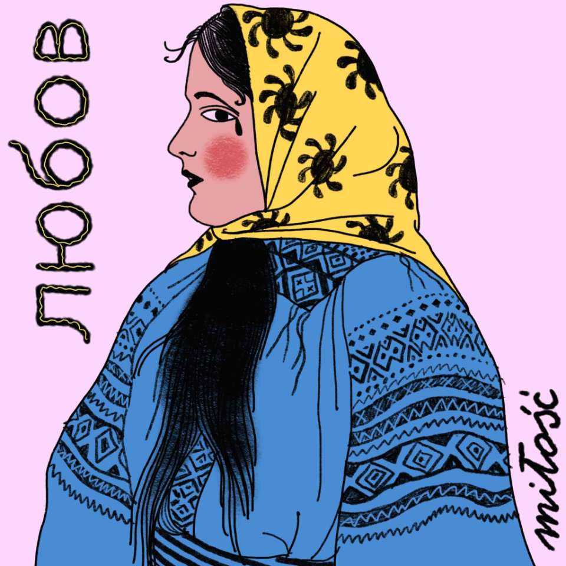
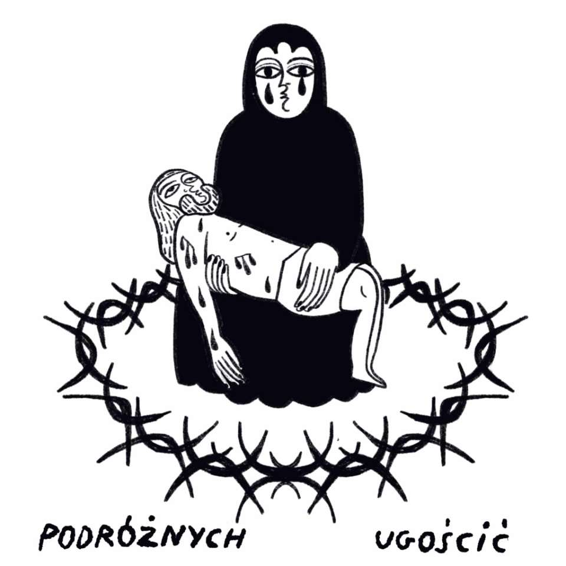
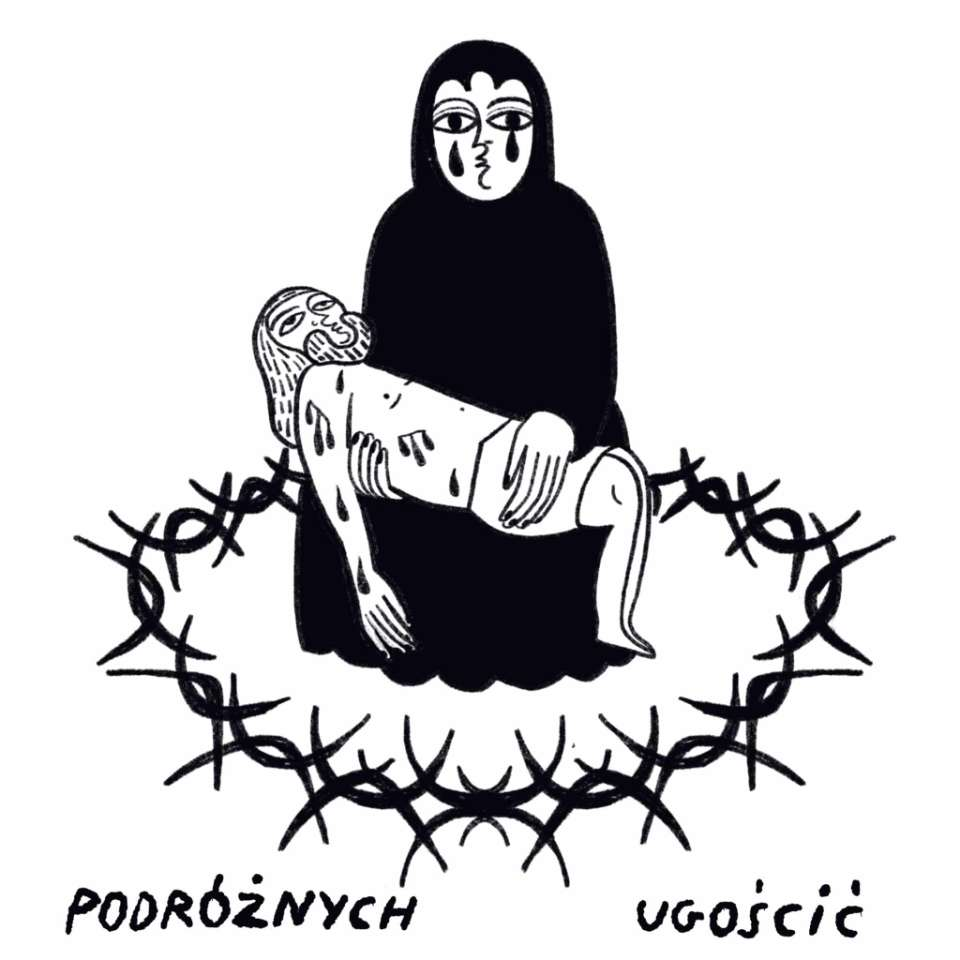
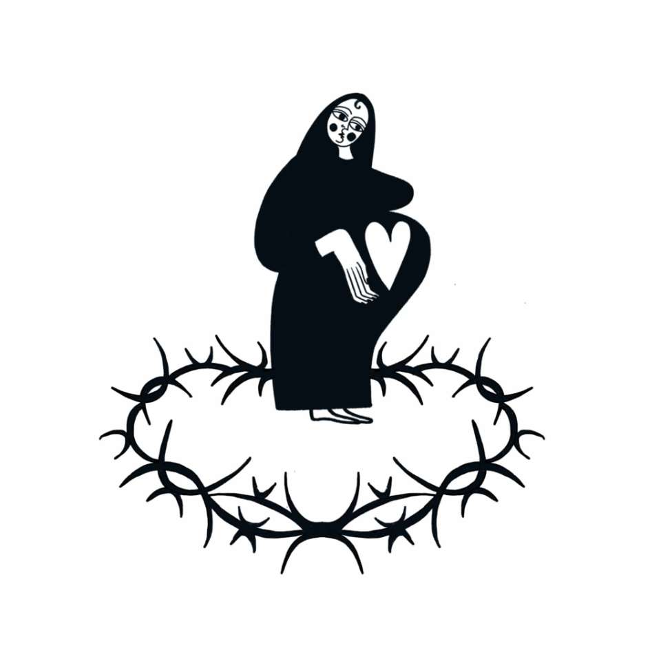
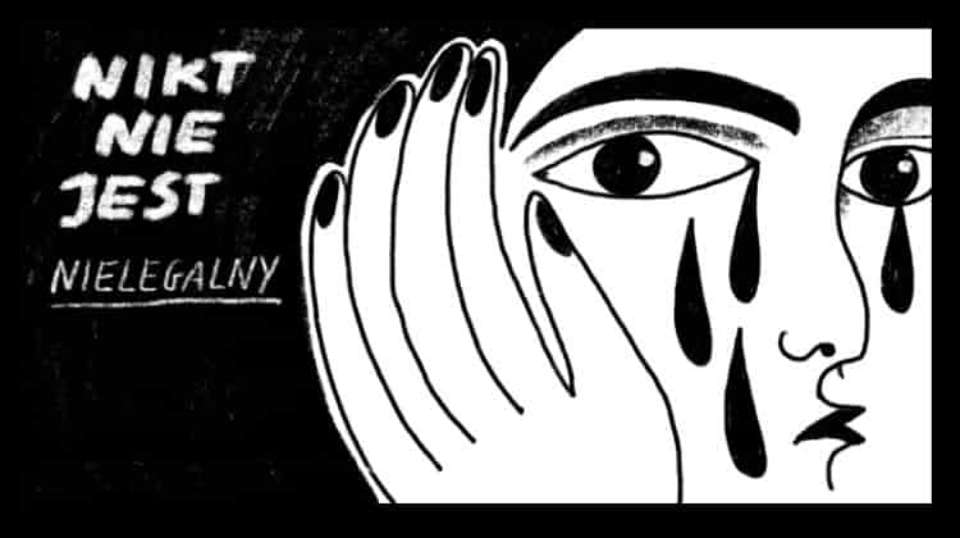
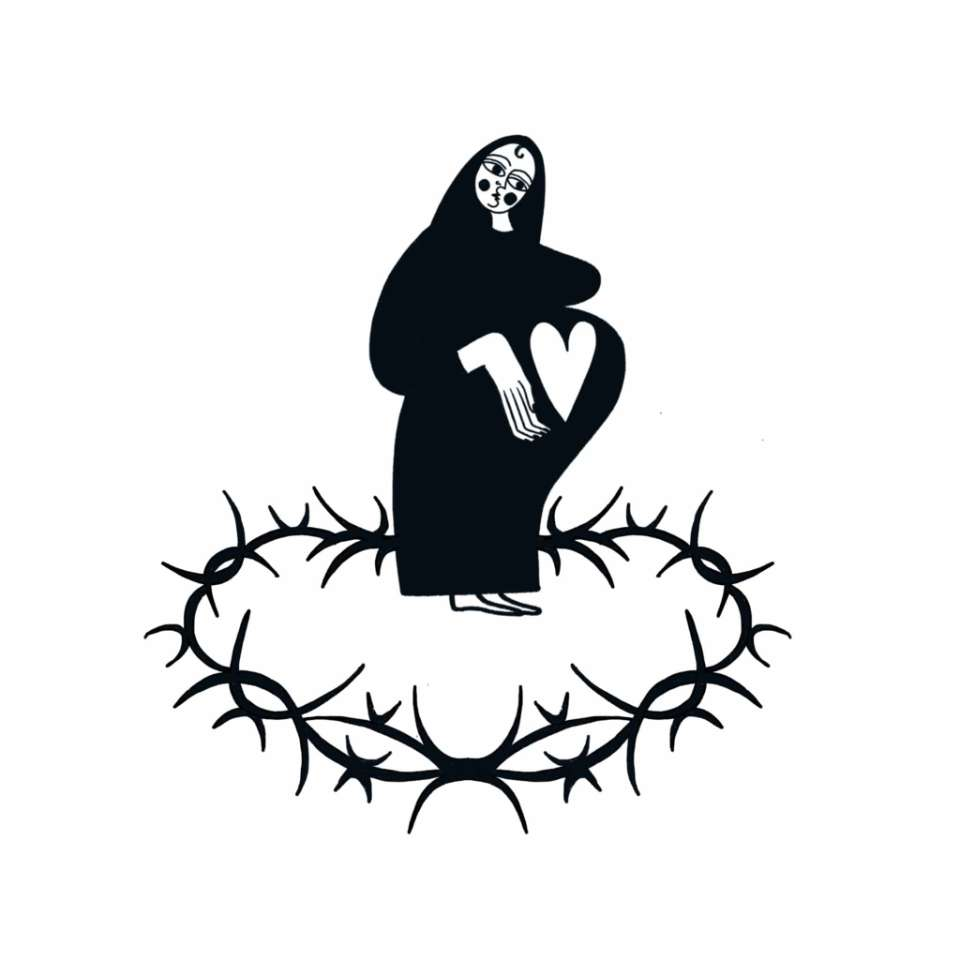
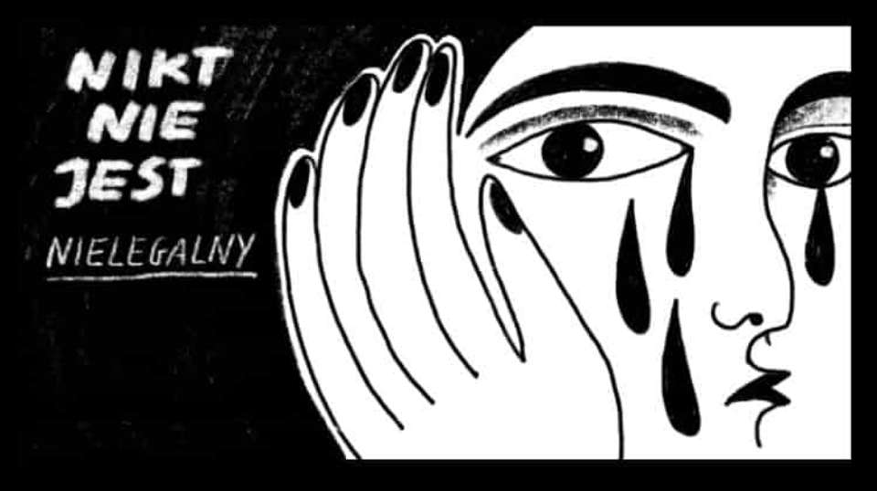

Nasze dziaania rozpoczynalimy jako grupa przyjaci贸 je偶d偶cych pomaga na granice polsko-biaorusk. Od lutego 2022 roku dziaamy jako Stowarzyszenie Podr贸偶nych Ugoci.
Do czerwca tego roku skupialimy si g贸wnie na pomocy osobom przebywajcym w Strze偶onych Orodkach dla Cudzoziemc贸w. Na naszych mediach spoecznociowych zorganizowanimy trwajc kilka miesicy akcje. Jej celem byo zaanga偶owanie prywatnych os贸b z caej Polski w przygotowanie paczek dla konkretnych os贸b przebywajcych w orodkach zamknitych. Ka偶dy kompletujcy paczk zna wiek, imi i indywidualne potrzeby wspieranej osoby. Zale偶ao nam zmniejszeniu dystansu midzy pomagajcymi a osobami w orodkach. Wsp贸pracujcy z nami zesp贸 wolontariuszy pilnowa by ka偶da paczka bya kompletna i odpowiadaa wymaganiom danego SOCu. Dziki tej akcji udao nam si ponad 1000 dostosowanych do indywidualnych potrzeb, imiennych paczek.

Poza zapewnieniem podstawowych potrzeb materialnych organizowalimy pomoc prawn, medyczn oraz psychologiczn.
Dziki naszemu naciskowi i akcjom medialnym dotychczas udao nam si wydosta z orodk贸w ponad 15 os贸b.
Aktualnie zapewniamy wsparcie osobom, kt贸re po wielu miesicach opuciy Strze偶one Orodki dla Cudzoziemc贸w i zdecydoway osiedli si w Polsce.
Jestemy r贸wnie偶 zaanga偶owani w pomoc Ukrainie. Razem z Grup Granica i Chlebem i Sol organizujemy regularne przejazdy autokarowe pomidzy Lwowem a Polsk. Do tej pory udao si ewakuowa ponad 11 tys. os贸b


 



 

 



Wpieramy osoby, kt贸re po wielu miesicach opuciy Strze偶one Orodki dla Cudzoziemc贸w i zdecydoway osiedli si w Polsce. Najczstsze formy asysty jakie oferujemy to pomoc w znalezieniu mieszkania i pracy, szkoy oraz kurs贸w jzykowych i zawodowych. Dziaamy tam gdzie wsparcie instytucjonalne jest nie wystarczajce albo nie istnieje w og贸le.
W czasie 6-12 miesicy pobytu w orodku strze偶onym 偶adna z os贸b nie ma mo偶liwoci pracy. Po wyjciu z orodka osoby czsto nie dysponuj rodkami finansowymi niezbdnymi do rozpoczcia samodzielnego 偶ycia. Zapewniamy im wsparcie poprzez opacenie kaucji za mieszkanie, koszt贸w transportu miejskiego, bada i dokument贸w potrzebnych do pracy.
Zale偶y nam 偶eby osoby kt贸rym pomagamy jak najszybciej si usamodzielniy i odzyskay poczucie sprawczoci. Do tej pory kilkanacie os贸b przy naszym wsparciu rozpoczo prace i wprowadzio si do nowych mieszka.
W planach mamy utworzenie kompleksowego pakietu pomocy dla os贸b wychodzcych ze strze偶onych orodk贸w. Chcemy aby obejmowaa ona pomoc prawn, konsultacje psychologiczne a tak偶e dostp do mieszkania na start. Dziaamy z pomoc powikszajcej si grupy wolontariuszy.
Jednym z naszych priorytet贸w jest utworzenie miejsc pracy dla os贸b uchod藕czych. Zale偶y nam aby wsp贸tworzyy one treci na platformach spoecznociowych stowarzyszenia. Wczenie gosu os贸b uchod藕czych w spoeczn debat o kwestiach migracji i kryzysu humanitarnego na granicy wydaje nam si kluczowym przedsiwziciem.
Dzięki waszym wpłatom możemy dalej skutecznie działać! Dziękujemy za Wasze zaufanie i każdą wpłaconą złotówkę!
Przez Facebook: facebook.com/podroznychugoscic
Nr konta: 55 1140 2004 0000 3102 8229 2022
Nazwa: Stowarzyszenie Podr贸偶nych Ugoci
W tytule przelewu prosimy o wpisanie "Darowizna na cele statutowe"
NIP: 5213961281
REGON: 521399421
Instagram: @podroznychugoscic_pl
Facebook: facebook.com/podroznychugoscic
Tiktok: @podroznychugoscic
Regulamin jest dostpny do popbrania tutaj.
Zawsze mo偶esz skontaktowa si z nami przez nasz adres email:
Podroznychugoscic@gmail.com